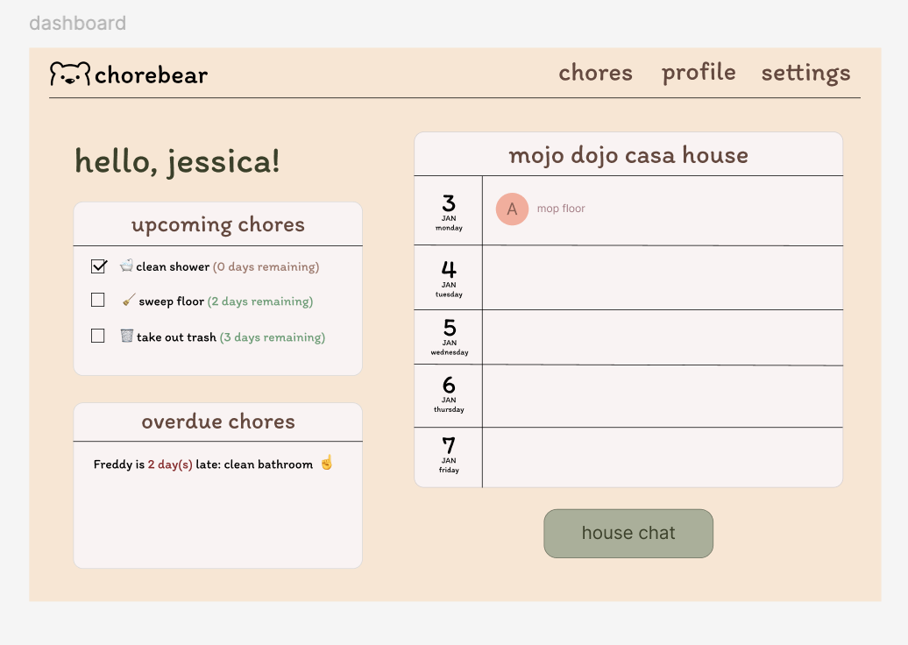
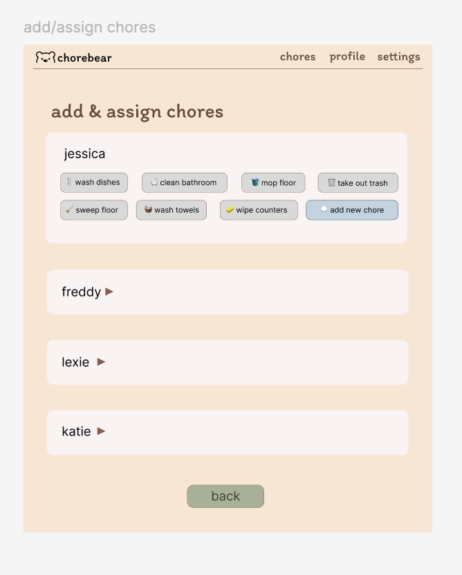
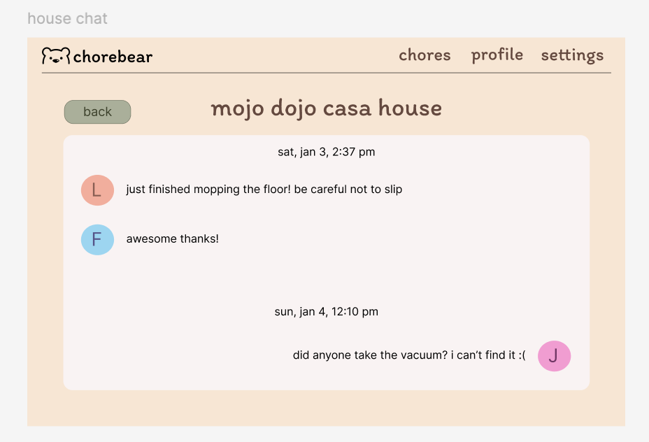
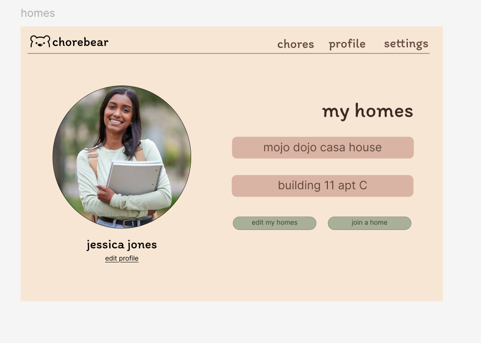
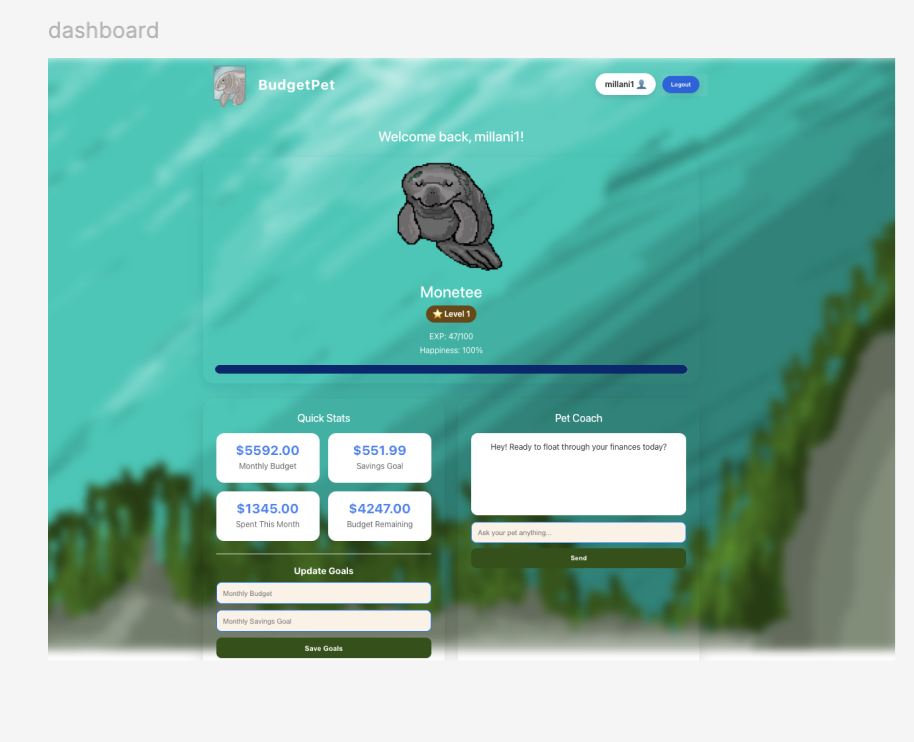
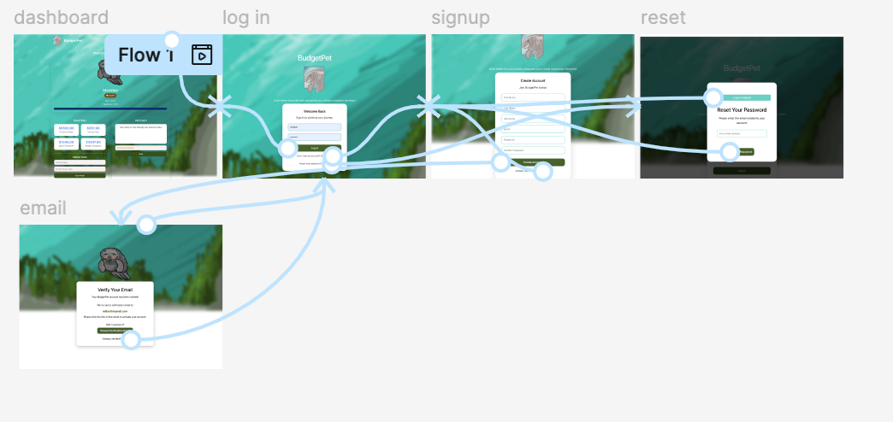

My Projects
ChoreBear — Roommate Chore Management App
Led mixed-methods user research and translated findings into personas, requirements, and an interactive prototype for a household chore-management app.
Roommates struggle to fairly divide chores, and discomfort with confrontation often means the issue never actually gets addressed, it just builds into resentment instead.

The dashboard, the first thing a user sees each time they open the app.

Assign Chores, built directly from the finding that most participants had no clear system for dividing responsibility.

House Chat, since group chat was participants' most common way of discussing chores, even though many found it unproductive.

My Homes, letting users manage multiple households as roommate situations change semester to semester.
- Co-designed a mixed-methods study (22-response survey + 6 in-depth interviews, 28 participants total) and personally authored the interview guide and digital questionnaire.
- Conducted and synthesized interviews to develop two evidence-based personas that anchored the team's design priorities.
- Translated research findings into 10 functional and 7 non-functional requirements, tracing each feature directly back to a specific user pain point.
- Presented the final interactive prototype in a recorded walkthrough, articulating design rationale for each screen to the class.
Usability testing on the prototype showed that assigning a chore took roughly 15 seconds, well above the ~6 second average for other tasks. I traced this to unclear labeling in the navigation, and it became our top priority going into the next design iteration.
BudgetPet — Gamified Personal Finance App
Led product development for a budgeting app that uses a virtual pet to make tracking expenses feel motivating instead of tedious.
Budgeting apps tend to land on one extreme, either too spreadsheet-heavy to stick with, or too gamified to feel trustworthy with real money. We wanted something that held both.

The live dashboard, tracking budget stats alongside the AI-powered pet coach.

The actual flow-mapping work: live screens organized in Figma to trace the path from landing to dashboard.
- Led product development for a 5-person team building the app around a virtual pet companion tied to spending habits.
- Took the live front-end and organized it into a clickable multi-page Figma prototype, mapping the user flow to guide further design and development decisions.
- Designed the MongoDB data architecture, structuring collections for users, pets, and expenses to support core functionality.
- Built core REST API routes and business logic as backend lead, managing environment configuration and version control via Git/GitHub.
Without an original design file to start from, mapping the working product into a coherent flow meant reconstructing the logic after the fact. I organized the real screens into ordered frames and built click-through interactions in Figma, which gave the team something reviewable even without wireframes to start.
Personal Contact Manager
Built a secure contact management app with full CRUD functionality and user authentication.
Managing contacts across a shared system means each user needs to see only their own data, and the frontend and backend need to stay reliably in sync as the app grows.
- Designed the MySQL relational schema, normalized to reduce redundancy and support authenticated users and contact records.
- Built and documented the backend API in PHP using SwaggerHub, so the frontend always had an accurate contract to build against.
- Led the project as PM for a 5-person team, setting milestones and managing our Git workflow.
- Deployed and tested the live application on a DigitalOcean Linux server.
Connecting new backend endpoints to the frontend kept causing version mismatches and broken branches. Tightening up our Git workflow and adding isolated testing steps fixed the sync issues for good.
Professional Portfolio Website
This site. Built to actually show how I think and work, not just list it on a resume.
A static resume can't really demonstrate design sense or how I build something end to end. This site was a chance to show it directly instead of describing it.
- Used Claude (Anthropic's AI) as a working partner throughout the build, from layout decisions to content revisions.
- Built the site with plain HTML, kept simple enough to read and update later.
- Wrote the CSS myself with flexbox and grid, so it holds up across different screen sizes.
- Added the project filtering with plain JavaScript, nothing fancy, just enough to sort by category.
- Set up the folders, images, and the resume download myself.
Getting the project cards to hold their layout across different screen sizes took real trial and error. Mobile-first media queries and relative sizing units fixed most of the breakage.
Book Scraper API & Excel Dashboard
Built a small API that scrapes book prices and turns them into a formatted Excel report automatically.
Manually checking a site for prices and copying them into a spreadsheet is slow and easy to get wrong.
- Built a FastAPI scraper using BeautifulSoup to pull book titles, prices, and metadata automatically.
- Added a query parameter so anyone can control how many pages get scraped, right from the URL, with no code changes needed.
- Deployed it to Render with interactive Swagger docs so the API is actually usable by someone else.
- Wrote a script with OpenPyXL that turns the scraped data into a formatted Excel report, complete with a bar chart.
Hardcoded scraping scripts break the moment you want more data. Building the page range into the URL itself meant anyone could adjust scraping depth without touching the code.